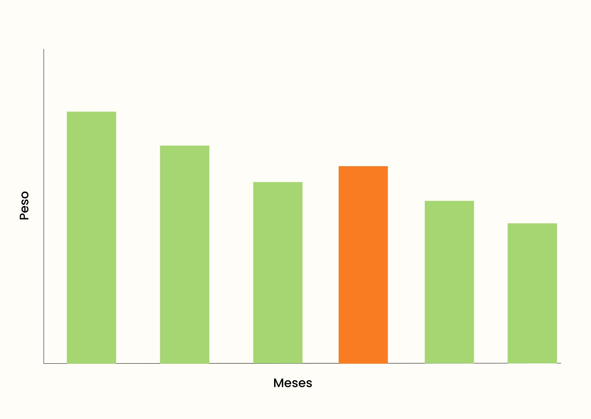

Registro de Peso
Gráfico Mensual de Seguimiento de Peso:
El análisis mensual refleja una tendencia positiva en la mayoría de los meses, con una constante reducción de peso. Sin embargo, se observa un mes específico en el que se registró un ligero aumento en el peso.

Registrar nuevo peso